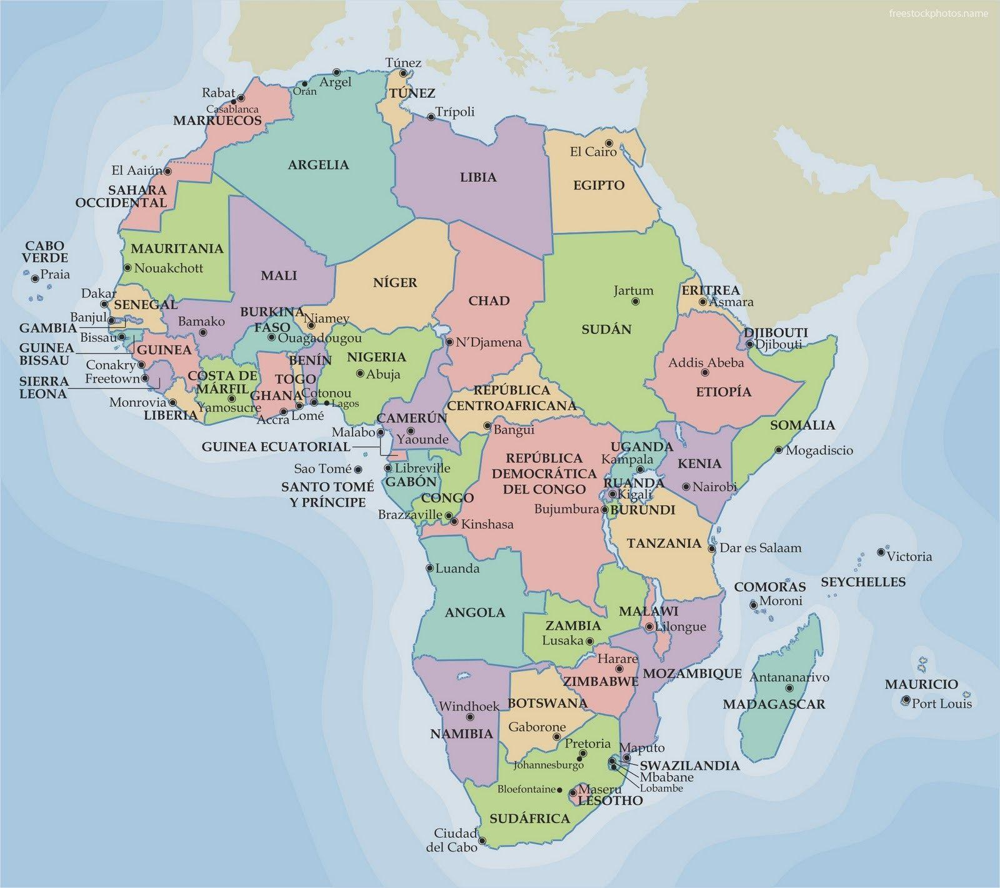

Africa
Africa is the second largest continent on Earth, home to over 1.4 billion people and over 50 countries. It is known for its rich cultural heritage, diverse wildlife, and vast landscapes from deserts to rainforests. From ancient civilizations like Egypt to vibrant modern cities, Africa offers a fascinating blend of history and progress. Explore the continent’s many countries to discover their unique stories and traditions.
